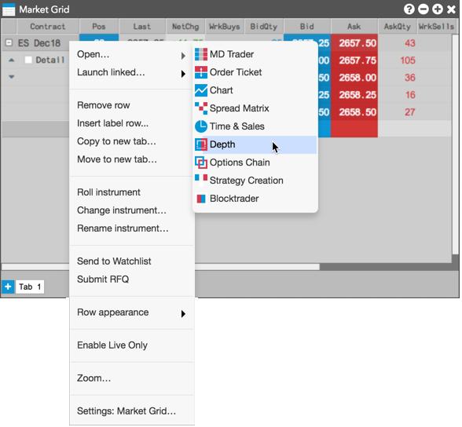
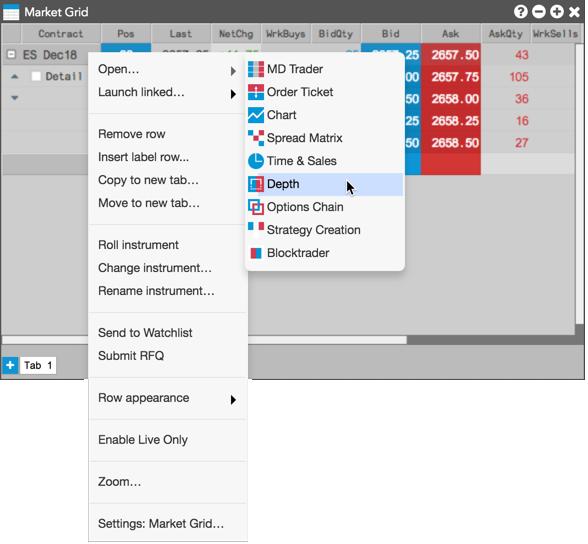
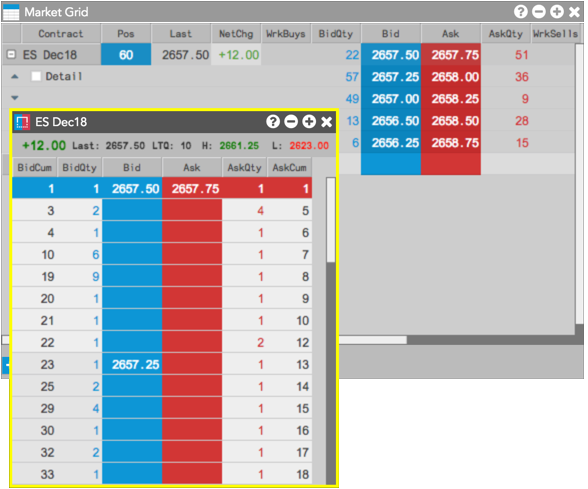

Add an instrument to Market Grid.
Right-click the instrument row and select Open | Depth from the context menu.

The Depth widget opens seeded with market data and displays detailed depth for the instrument.

The Depth widget can be launched as either a stand-alone widget or linked widget per instrument from Market Grid.
To open a stand-alone Depth widget from Market Grid:
Add an instrument to Market Grid.
Right-click the instrument row and select Open | Depth from the context menu.

The Depth widget opens seeded with market data and displays detailed depth for the instrument.
To launch a linked Depth widget from Market Grid:
Open an instrument in Market Grid.
Right-click the instrument row and select Launch linked... | Depth from the context menu.

A linked Depth widget opens seeded with market data and displays detailed depth for the instrument.
